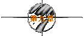
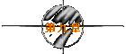

|
牛魔王：紫霞，来来来，我来介绍我妹妹和妹夫给你认识。香香，
贤弟！来来来，过来！这个是我妹夫，这个是我妹妹香香！
香香：紫霞姑娘，你好。
(紫霞向香香还礼，用一种凄楚的目光望着至尊宝，至尊宝
尴尬地一笑，回避着对方的目光。)
紫霞：你能留在这里成亲吗？
至尊宝：可以吧。
紫霞：那你家里的老婆怎么办？
牛魔王：老婆？你们两个认识吗？
(至尊宝不置可否。)
香香：你有老婆？
至尊宝：已经离婚啦。
香香：怎么我从来就没有听你说过呢？
牛魔王：哎，妹妹，男人有三妻四妾很平常嘛，别那么紧张。贤弟，
你说对不对？
至尊宝：(心不在焉地)对对！(看了紫霞一眼，无言地低下头去)
牛魔王：紫霞，实不相瞒，经过这两天的朝夕相处，我发觉我已经
深深地爱上了你，为了表示对你的诚意，我当着这么多兄
弟的面前向你求婚，这个月光宝盒是我送给你的定情信物，
希望你能嫁给我！
(至尊宝一见大喜，急忙用眼神示意紫霞接受，紫霞只是幽
怨地望着他，一动不动。)
蛤蟆精：我反对这门亲事！
牛魔王：啊？你说什么？
至尊宝：我来！说什么说什么说什么？人家男才女貌天生一对，轮
得到你这个妖怪来反对？
蛤蟆精：紫霞仙子择偶是有一个规矩的，如果大哥你能做得到的话，
我们就心服口服！
至尊宝：有什么规矩啊？
蛤蟆精：她曾经发过一个誓，如果谁能把紫青宝剑拔出鞘的话呢，
就是她的如意郎君！
至尊宝：啊？！(没想到竟是自己拔出了那把紫青宝剑，浑身一震，
紫青宝剑从怀里掉了出来)
群妖 ：啊？紫青宝剑！
牛魔王：让我来！
紫霞：(抢先拾起宝剑)没有这种事。这个只不过是我跟大家开的
一个玩笑。
群妖：开玩笑？
紫霞：这把剑谁拔得出谁拔不出根本没有关系。(说完转身向后
院走去)
牛魔王：啊？你们这些混蛋，在我的地盘上搅和，谁敢阻我谁就死！
(这时铁扇公主来了。至尊宝趁乱向后院追去，香香在一旁
看在眼里。)
(至尊宝在后院里找到紫霞。)
至尊宝：哎呀，你怎么躲在这里呀？
(突然紫霞拔出宝剑抵在至尊宝的咽喉上。)
画外音：当时那把剑离我的喉咙只有0.01公分，但是四分之一炷香
之后，那把剑的女主人将会彻底地爱上我，因为我决定说
一个谎话。虽然本人生平说过无数的谎话，但是这一个我
认为是最完美的……
紫霞：你再往前半步我就把你给杀了！
至尊宝：你应该这么做，我也应该死。曾经有一份真诚的爱情放在
我面前，我没有珍惜，等我失去的时候我才后悔莫及，人
世间最痛苦的事莫过于此。你的剑在我的咽喉上割下去吧！
不用再犹豫了！如果上天能够给我一个再来一次的机会，
我会对那个女孩子说三个字：我爱你。如果非要在这份爱
上加上一个期限，我希望是……一万年！
(“呛啷”一声宝剑落地，紫霞感动得泪流满面。)
紫霞：那么你怎么向你娘子交代呢？
至尊宝：一定要交代！所以我一定要拿回那个月光宝盒带你一起回
去跟他们说清楚。我不管别人怎么说我，我也不怕后世会
有千千万万的人对我唾骂，我要一个人承担下来。
紫霞：你不会骗我吧？
至尊宝：但是我痛恨我自己没有本事拿回那个月光宝盒，我……
紫霞：我帮你！
至尊宝：不用，太危险了。
紫霞：你不想？
至尊宝：想！我……
(这时牛魔王和铁扇公主来了。)
铁扇公主：哼，你们在儿干嘛？
(至尊宝和紫霞不语。)
铁扇公主：她是谁呀？我问你呀，她是谁？
牛魔王：她……贤弟，她是谁你说啊！
至尊宝：她……是我的发妻。
牛魔王：哇！贤弟，你太过分了！(低声地)好哥们儿。
铁扇公主：你居然还把妹妹嫁给他？
牛魔王：所以他老婆看不过去，用剑指着他。
铁扇公主：你跟我过来，我有话要问你！(将至尊宝拽走)
紫霞：原来你有老婆……
牛魔王：感情破裂了。
(这时另一边)
铁扇公主：你跟我说清楚，到底发生什么事？
至尊宝：我说过了，大嫂。
铁扇公主：你叫我大嫂？
至尊宝：对不起，应该是牛夫人。
铁扇公主：以前陪我看月亮的时候叫人家小甜甜，现在新人胜旧人了，
叫人家牛夫人！
至尊宝：小甜甜？？
铁扇公主：你以为我这么辛苦来这里真的是为了这条臭牛吗？是为了你
这个没有良心的臭猴子啊！(用力掐至尊宝)
至尊宝：啊！哎呀！
牛魔王：(在远处看着)贤弟，真是难为你了！
至尊宝：不关我的事啊！
铁扇公主：我不管，今晚二更时分你要在这里等我，我有话跟你说……
(转身回到紫霞面前)如果我是你呀，我老公讨小老婆我就死
了算了！
牛魔王：真的！？
铁扇公主：没错！不过要先把你阉了！
牛魔王：啊！？
铁扇公主：跟我走！
(两
牛魔王：孙悟空！你斗不过我的！（用力一扇，整座城连根飞起）
悟空：开什么玩笑！
牛魔王：我把整座城扇到太阳那边去！我看你救得了谁？哈哈哈哈！
悟空：（一把推开紫霞）别妨碍我做正经事，要死就死远一点！
（至尊宝转身便走，紫霞伸手一抓，悟空怀中的金铃掉了出来，
紫霞捡起一看，正是自己的。）
紫霞：还骗我！（追了下去）
（悟空追到城下面，用金箍棒将城顶住。）
牛魔王：臭猴子把城顶住？我扇！
悟空：我把你顶回去！
（紫霞追上来，一把抱住孙悟空。）
紫霞：混球！
悟空：你又想怎么样？贱人！
紫霞：混蛋！
悟空：你才混蛋！
紫霞：你不是人！
悟空：你才不是人！你不要再发疯了，我刚才跟你说的你明不明白？
紫霞：你又明不明白我已经不再是神仙了！我只明白一件事：爱一
个人是那么痛苦！
悟空：不要跟我说这种废话，我说过了你认错人啦！
紫霞：那这串金铃是在哪里买的？
（孙悟空望着金铃，无言以对。突然牛魔王从身后一叉刺来。）
紫霞：小心！（用身体在悟空前面一挡，钢叉正中紫霞。）
牛魔王：啊？紫霞！
悟空：我打！（一棒将牛魔王打得穿土而过，飞到城上面去了）
（紫霞向远处飘去，悟空脚下几个起落飞过去抱住她。）
悟空：紫霞！
紫霞：我的意中人是个盖世英雄，有一天他会踩着七色的云彩来娶
我，我猜中了前头，可是我猜不着这结局……（头一歪）
（悟空悲痛万分，头上的金箍果然越收越紧。悟空苦不堪言，
双手一松，眼睁睁看着紫霞美丽的身躯向远方飘去……）
悟空：我要你的命－－！
（悟空一腔痛苦化为了仇恨，他跳上城头，抽出金箍棒，运起
神威将牛魔王击毙。）
（这时整座城离太阳越来越近，气温越来越高。悟空与八戒和
沙僧保护师傅唐僧告别了决心一死的青霞，在整座城爆炸的
一瞬间用月光宝盒穿梭时空而去……）
（未完待续）
| 


 
